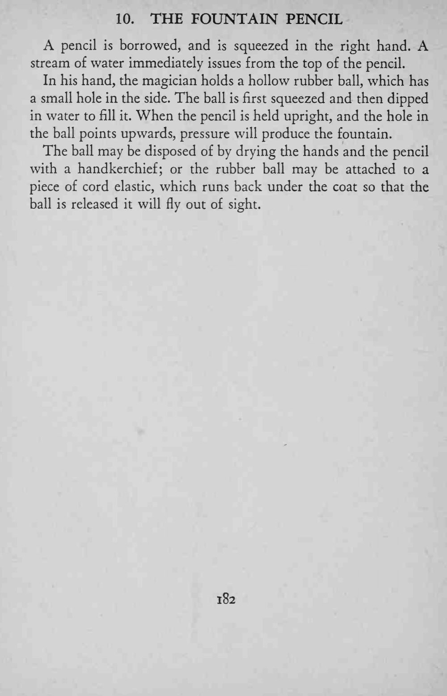
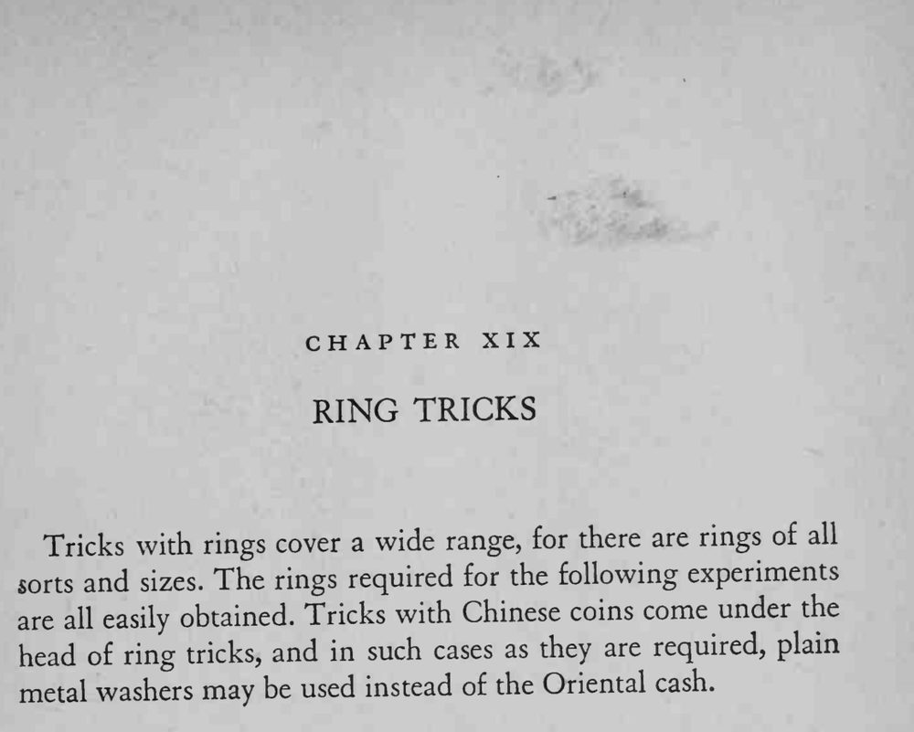

魔术师借来一支铅笔握在手中用力一挤，铅笔顶端竟喷出一股细水柱。
水球别灌太满，挤压动作要自然，让观众认定水是从铅笔里出来的。


A pencil is borrowed, and is squeezed in the right hand. A stream of water immediately issues from the top of the pencil. In his hand, the magician holds a hollow rubber ball, which has a small hole in the side. The ball is first squeezed and then dipped in water to fill it. When the pencil is held upright, and the hole in the ball points upwards, pressure will produce the fountain. The ball may be disposed of by drying the hands and the pencil with a handkerchief; or the rubber ball may be attached to a piece of cord elastic, which runs back under the coat so that the ball is released it will fly out of sight. Tricks with rings cover a wide range, for there are rings o£ all sorts and sizes. The rings required for the following experiments are easily obtained. Tricks with Chinese coins come under the all head of ring tricks, and in such cases as they are required, plain metal washers may be used instead of the Oriental cash.